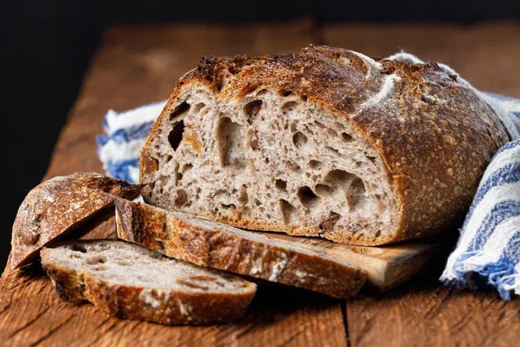
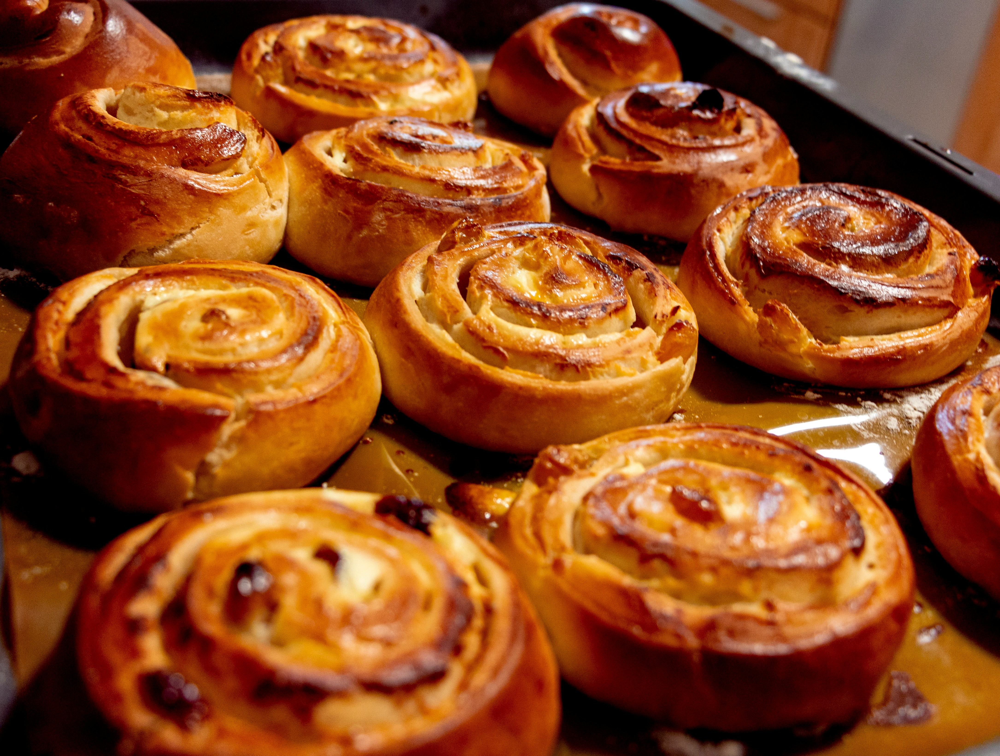
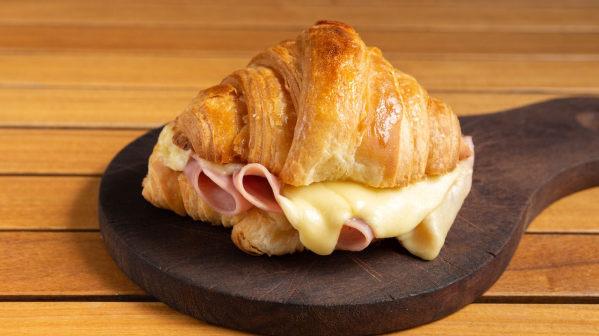
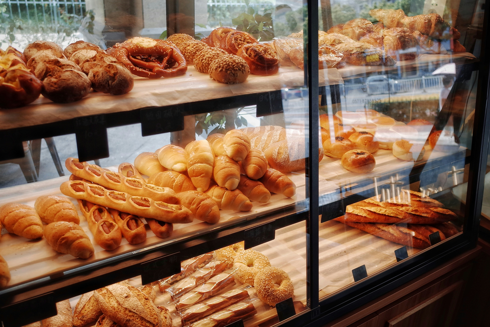

Fermentação natural e ingredientes selecionados.
Ver Cardápio
O tradicional pão de fermentação natural.
R$ 22,00

Pão doce polvilhado com açúcar e canela.
R$ 18,00

Croissant recheado,
Escolha entre diversos sabores
R$ 18,00

A Fornada da Vila nasceu do desejo de resgatar o sabor real do pão. Em um mundo cada vez mais rápido, decidimos ir na contramão: aqui, o ingrediente principal é o tempo.
O que começou em uma pequena cozinha de bairro hoje é um refúgio para quem busca saúde e sabor. Nossos pães passam por um processo de fermentação natural de 48 horas, resultando em cascas crocantes e miolos leves que respeitam o seu organismo.
Não somos apenas uma padaria; somos uma ponte entre a tradição milenar e a sua mesa.